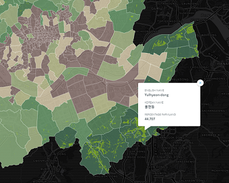
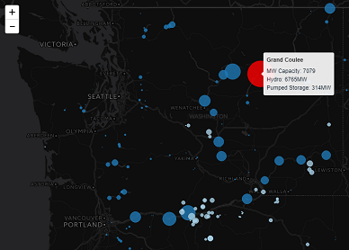
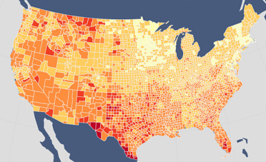

MAP672: Programming for Web Mapping
Web Cartography at the University of Kentucky

Urban Farmland and Gardens by Seoul Neighborhood
This map features graduated choropleth symbolization of the amount of farmland and urban gardens by city neighborhood. It also incorporates proportional symbols to visualize the relative size of registered urban farms and gardens.
The map was generated in Carto with GeoJSON files created from spatial information and shapefiles initially modified in QGIS.

Wind and Hydroelectric Power Plants in the USA
This map features proportional symbolization of the amount of power in megawatts generated by each wind and hydroelectric power plant in the USA by primary power source.
The map was generated in Leaflet with GeoJSON data about US power plants from the EIA's form 923.

Average Rent across the USA, 2015
This map features choropleth symbolization of average rent by county across the USA in 2015.
The map was generated in Leaflet with a GeoJSON data file produced by joining rent data from American FactFinder with US county polygons from the US Census Cartographic Boundary Shapefiles.

Percentage of Adults Lacking Health Insurance by US County, 2015
This map features choropleth symbolization of the percentage of uninsured adults in the United States by county in 2015.
The map was generated in CARTO with a GeoJSON file containing data from the University of Wisconsin and the Robert Wood Johnson Foundation.